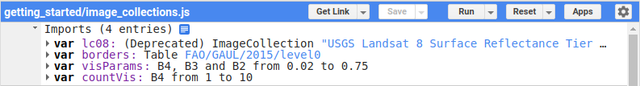
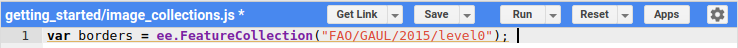
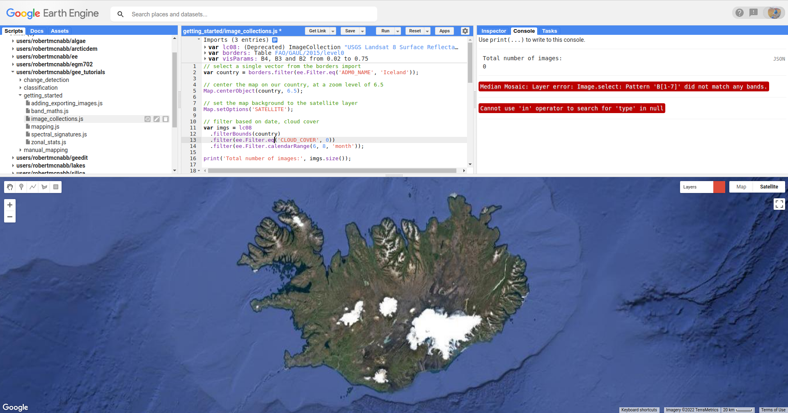
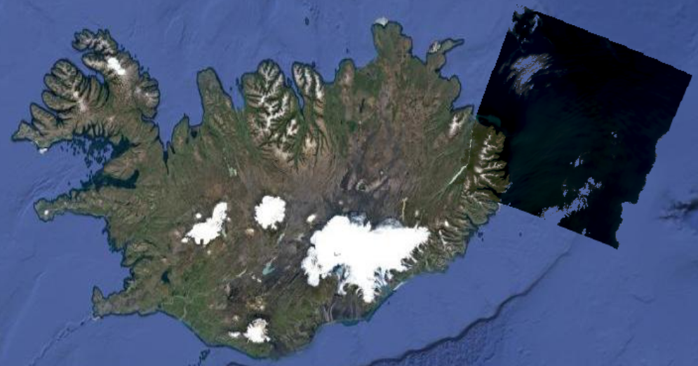
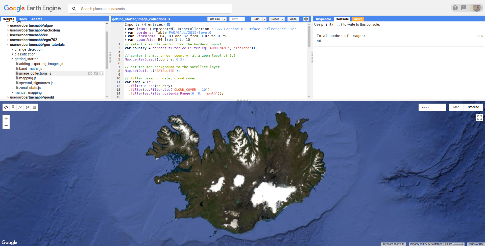

image collections and vectors#
Tip
The script for this tutorial can be found via this direct link.
Alternatively, if you have already added the repository, you can open the script from the Code Editor, by
navigating to 01_getting_started/03_image_collections.js under the Reader section.
In the previous tutorials, we’ve focused on adding individual Images to the Map
using their id. This isn’t the only way to find Images to use, however. Very often,
we might want to do some processing or analysis for many Images. For this, we use ImageCollections.
In this tutorial, you will see how you can:
import GEE Datasets
filter ImageCollections and FeatureCollections to select objects matching specific criteria
apply a mask to cloudy pixels using a function and
map()buffer a Geometry
clip an Image to a Geometry
adding dataset imports#
In the previous tutorial, we saw how to import geometries, using the Drawing tools. These are not the only things that we can import, however. When you open the script, you should see the following imports at the top of the script:
{kind=link}
There are four imports here:
lc08, the “USGS Landsat 8 Surface Reflectance Tier 1” ImageCollectionborders, the “Global Administrative Unit Layers 2015, Country Boundaries” FeatureCollectionvisParams, a dictionary with visualization parameters to pass toMap.addLayer()countVis, a dictionary with visualization parameters to pass toMap.addLayer()
The first two (lc08 and borders) are GEE Datasets - you can click the link in the Imports description
to find out more about them. To import GEE datasets into a script, you can add them to the code editor like this:
var borders = ee.FeatureCollection("FAO/GAUL/2015/level0");
When you do this, you should see that this gets underlined in yellow:
{kind=link}
When you mouse over this line, you should see the following message:
{kind=link}
Click “Convert” to add the variable as an import:
{kind=link}
filtering#
The first line of the script:
// select a single vector from the borders import
var country = borders.filter(ee.Filter.eq('ADM0_NAME', 'Iceland'));
uses ee.FeatureCollection.filter() (documentation)
and ee.Filter.eq() (documentation)
to select only those Features that match the given metadata value.
ee.Filter.eq() takes two parameters:
name, the property name to filter onvalue, the value to compare
and returns a Filter object. Here, we’re filtering over the ADM0_NAME property (the UN country name)
to select only Features that match Iceland - in other words, we’re selecting the Feature that
corresponds to the country of Iceland.
Note
The result of this operation is a FeatureCollection - even if there’s only one Feature (or no Features) that match the criteria.
The next few lines of code are things we’ve seen already - using Map.centerObject() to center the Map on our
country polygon(s), and Map.setOptions() to change the background image from the default to the satellite basemap.
The next block of code uses a few different methods to filter the entire Landsat 8 ImageCollection. The first,
ee.ImageCollection.filterBounds() (documentation),
will filter the ImageCollection based on whether the images intersect with the given geometry (in this case, our
country boundary):
var imgs = lc08
.filterBounds(country)
Next, just like with the FeatureCollection, we use ee.ImageCollection.filter()
(documentation)
to apply a Filter. Here, we’re using ee.Filter.lte()
(documentation) to return
only Images with a cloud cover less than or equal to 10%:
.filter(ee.Filter.lte('CLOUD_COVER', 10))
Finally, we use ee.ImageCollection.filter() and
ee.Filter.calendarRange() (documentation)
to select only images that have months between June (month 6) and August (month 8).
.filter(ee.Filter.calendarRange(6, 8, 'month'));
The end result, at least for this example, is a total of 46 Images that meet all of the criteria - we can see this using
ee.ImageCollection.size() (documentation):
print('Total number of images:', imgs.size());
functions, mapping, and masking#
This gives us an ImageCollection that we can mosaic to produce a cloud-free mosaic. However, it is often the case that if we limit ourselves to “cloud-free” (i.e., the ‘CLOUD_COVER’ metadata value is equal to 0) images, we end up with very little to work with:
{kind=link}
But, even low values of cloud cover can still end up in our mosaic:
{kind=link}
To make sure that we aren’t using clouds, we can apply a mask to our images using map() and a function.
Landsat surface reflectance products have a QA (quality assessment) band that flags pixels that are (or might be) clouds, cloud shadow, snow, water, cloud confidence, and so on.
Rather than masking every single possible pixel value, we can use ee.Image.bitwiseAnd()
(documenation) to select pixels where
the specific bit is set. For Landsat 8 Collection 2, Level 2 (surface reflectance) products:
bit 1 corresponds to dilated cloud
bit 2 corresponds to cirrus clouds
bit 3 corresponds to clouds
bit 4 corresponds to cloud shadow
Note
For a full list of which bits correspond to what, see the
USGS Data Format Control Book
- information about the QA_Pixel band is found in section 3.2 (page 8).
So, to select all of the cloud pixels, we would use:
var qa = image.select('QA_PIXEL');
var cloud = qa.bitwiseAnd(1 << 3)
This uses the left-shift
(<<) operator to compare the left-hand side (1) to the left by the right-hand side number of bits. Written in 16-bit
(digit) binary, the left-hand value (1) looks like this:
0000000000000001
When we shift it to the left by 3 bits, we have this:
0000000000001000
ee.Image.bitwiseAnd() then compares each pixel of the image to this value, returning “true” wherever the pixel in
the image has a value of 1 in the 3rd bit, and “false” wherever the image has a value of 0 in the 3rd bit.
But, we don’t just want to mask the cloudy pixels - we also want to mask the cloud shadow, cirrus, and dilated cloud
pixels. So, we can use ee.Image.or()
(documentation)
to combine these different criteria:
var cloud = qa
.bitwiseAnd(1 << 1) // dilated clouds
.or(qa.bitwiseAnd(1 << 2)) // cirrus
.or(qa.bitwiseAnd(1 << 3)) // cloud
.or(qa.bitwiseAnd(1 << 4)); // cloud shadow
This provides an image where pixel values are true if they match the criteria (cloud, cloud shadow, cirrus, or
dilated cloud), and false where they don’t match the criteria.
Finally, not all of the bands of Landsat (or other sensors) cover exactly the same area - there are small differences at the edges of the scene. To mosaic the images together in a nice way, we want to exclude these pixels from the mask.
To do this, we can use ee.Image.mask() (documentation)
to get the NoData mask for the image, then combine this with ee.Image.reduce()
(documentation) and ee.Reducer.min()
(documentation) to get a mask of all of the pixels that have values
in all bands:
var edge = image.mask().reduce(ee.Reducer.min());
Then, we can use ee.Image.updateMask() (documentation)
to mask out areas where there are clouds, using the cloud mask we’ve computed. To do this, we use ee.Image.not()
(documentation) – this will mask out pixels where
the cloud mask has been set (note that using the cloud mask directly will mask out pixels where there are no clouds),
and additionally using the edge pixel mask:
image.updateMask(cloud.not()).updateMask(edge);
Now, to do this efficiently over the entire ImageCollection, we want to combine all of these individual steps into
a function, then pass that function to ee.ImageCollection.map()
(documentation):
// a function that will mask cloudy pixels
function cloudMask(image) {
// select the pixel_qa band
var qa = image.select('QA_PIXEL');
var cloud = qa
.bitwiseAnd(1 << 1) // dilated clouds
.or(qa.bitwiseAnd(1 << 2)) // cirrus
.or(qa.bitwiseAnd(1 << 3)) // cloud
.or(qa.bitwiseAnd(1 << 4)); // cloud shadow
// Remove edge pixels that don't occur in all bands
var edge = image.mask().reduce(ee.Reducer.min());
// set the mask
return image.updateMask(cloud.not()).updateMask(edge);
}
imgs = imgs.map(cloudMask);
To confirm that the mask has worked, you can add a sample image to the Map using ee.ImageCollection.first()
(documentation):
// add a sample image to the map:
Map.addLayer(imgs.first().select('SR_B[1-7]').multiply(0.0000275).add(-0.2), visParams, 'sample');
You should see something like this:
{kind=link}
mosaicking#
Now that we have our collection of masked images, we’re ready to mosaic (combine) them together. Remember that right now, we have a number of overlapping images stored as an ImageCollection – what we want to do is combine all of the individual images into a single image that covers the whole area.
Earth Engine has a number of ways to do this -
we can use ee.ImageCollection.mosaic(), (documentation),
which composites the images according to their order in the ImageCollection. With our cloud-masked images, though,
this leads to a somewhat patchy result:
{kind=link}
We could also use a Reducer to composite the images. If we have an image collection of normalized difference
vegetation index (NDVI) images, for example, we might want to see the “greenest” pixel value over the course of a season
using ee.Reducer.max(). Instead of that, though, this script takes an average (median) of all of the valid pixel
values, then composites them into an image, using ee.ImageCollection.median()
(documentation):
// mosaic the images using median
var median = imgs.median();
This returns an Image where each pixel is the median value of all of the valid (unmasked) pixel values from the ImageCollection.
This is not the only way to composite the images, but it is a way to give us a relatively smooth-looking mosaic – for other applications, it might make sense to use another method.
buffering geometries#
Note that so far, our images cover an area much larger than our area of interest, because ee.ImageCollection.filterBounds() takes any image
that intersects the given geometry, even if it’s a tiny overlap.
To restrict our mosaic to our area of interest, we can use ee.Image.clip()
(documentation) to clip the Image to a
Feature, Geometry, or even another Image.
However, our country boundaries are fairly low-resolution - by clipping directly to the country Feature, we
might lose details at the coastline. So, we can apply a buffer to expand the outline, using ee.Feature.buffer()
(documentation).
ee.Feature.buffer() takes the following inputs:
distance, the distance to buffer the input bymaxError(optional), the maximum error tolerated with the approximation of the bufferproj, the projection to use for the buffer.
For this example, we’ll use a buffer of 1000 m, and we’ll use the epsg:3857 projection
(this is the WGS 84 Pseudo-Mercator projection, used by among other things, Google Maps):
// buffer the boundary by 1 km (1000 m)
var buffered = ee.Feature(country.first()).buffer({
distance: 1000,
proj: 'epsg:3857' // pseudo-mercator projection
});
Note that we’re also using the first() method to select only the first Feature from our filtered
FeatureCollection, country - we need to make sure that we’re using a Feature, as there is no buffer
method for FeatureCollections.
clipping images#
We can now use ee.Image.clip() with our buffered outline to clip the mosaic:
median = median.clip(buffered);
Now, when we add the image to the Map, areas outside of the coastline of Iceland (defined by our Feature) will be masked out.
counting valid pixels#
One last thing we might want to do is see how many pixels went into the calculation – that is, how many valid (non-cloudy) pixels from the ImageCollection were there for each pixel of the mosaic?
To do this, we use ee.ImageCollection.count() (documentation):
var valid_count = imgs.count().clip(buffered);
When you run the script, you should see the following Map:
{kind=link}
To see the number of valid pixels, you can toggle on the “number of valid pixels” Image from the Layers menu:
{kind=link}
In this image, darker blue colors represent fewer valid pixels, while green/yellow pixels represent more valid pixels.
next steps#
This script also contains an Export.image.toDrive() call, to export the mosaicked + clipped image to Google Drive.
If you’ve made it this far, you should be able to filter ImageCollections and FeatureCollections based on metadata and other properties (including Features). You’ve also seen how you can compare image bits to mask out cloudy or other pixels, buffer geometries, clip images, and even count the number of unmasked pixels in an ImageCollection.
If you’re interested in some additional practice, here are some suggestions:
Using
valid_count, can you apply a Reducer to find the average number of valid pixels per pixel of the mosaic? What about the maximum and minimum numbers?The
cloudMask()function written above only includes high-confidence cloud pixels and cloud shadow pixels. Using the information in the Data Catalog, can you add an additional check to mask high- and medium-confidence cirrus pixels?